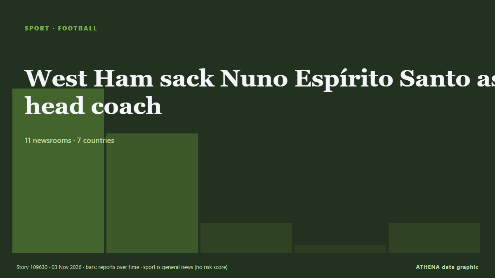

كرة القدم
برعايةبرعاية  Cybernetics and Artificial Intelligence Lab Welcome to the Cybernetics and Artificial Intelligence Laboratory, established at the Department of Business Administration of the National and Kapodistrian University of Athens. The lab is headed by Professor Dimitrios Thomakos. The lab aims to do research that can be published in top venues. Our research uses tools and methods of Artificial Intelligence, and lies in the following areas: - Forecasting - Decision making - Cyber security - Finance We are always looking forward to collaborating with exceptional students!
Cybernetics and Artificial Intelligence Lab Welcome to the Cybernetics and Artificial Intelligence Laboratory, established at the Department of Business Administration of the National and Kapodistrian University of Athens. The lab is headed by Professor Dimitrios Thomakos. The lab aims to do research that can be published in top venues. Our research uses tools and methods of Artificial Intelligence, and lies in the following areas: - Forecasting - Decision making - Cyber security - Finance We are always looking forward to collaborating with exceptional students!
| 21 أكتوبر | 0 |
|---|---|
| 22 أكتوبر | 0 |
| 23 أكتوبر | 1 |
| 24 أكتوبر | 0 |
| 25 أكتوبر | 0 |
| 26 أكتوبر | 0 |
| 27 أكتوبر | 2 |
| 28 أكتوبر | 2 |
| 29 أكتوبر | 2 |
| 30 أكتوبر | 3 |
| 31 أكتوبر | 4 |
| 1 نوفمبر | 4 |
| 2 نوفمبر | 5 |
| 3 نوفمبر | 1 |
تُعرض العناوين بالإنجليزية كما نُشرت.

West Ham sack Nuno Espírito Santo as head coach
Rui Pedro Silva and Rui Barbosa follow Nuno out of the door. من Evening Standard (London)
Bayern are doing well despite rollercoaster week, Kane says
The German champions are without coach Vincent Kompany and several key players through injury ahead of their Champions League clash with Atletico Madrid. من Free Malaysia Today
South Africa's Verreynne, Prince receive ICC reprimands
South Africa batting coach Ashwell Prince and wicketkeeper Kyle Verreynne have been reprimanded by the International Cricket Council for showing dissent towards the umpires on the third day of the… من Business Recorder
Kane would swap Ballon d'Or for Champions League victory
Bayern Munich striker Harry Kane has beaten Barcelona youngster Lamine Yamal and Real Madrid forward Kylian Mbappé to emerge as the best player of the 2025-2026 season in Spanish newspaper Marca's… من Vanguard
Aston Villa make legal action decision after Jamie Carragher apology
Pundit had told Villa supporters to "shut the f*** up" من Evening Standard (London)
Real Madrid matches still banned in China despite Mbappe apology
"I've seen a lot of responsibility from a club which, at this level, is a club of great class, and as far as we're concerned, that's it, we've done our part, there's nothing more for us to do,"… من Vanguard
Arsenal win at Anfield for first time in 14 years to move top
Arsenal won at Anfield for the first time in 14 years after Kai Havertz's strike sealed a gritty 1-0 victory - but Liverpool were denied what looked to be a clear penalty. من Sky Sports
Chinese state TV fails to air Real Madrid match after Mbappe row
Mbappe, Real and La Liga later all said sorry for his remarks, and China's foreign ministry said it took the player's apology "seriously". من CNA (Channel NewsAsia)
Ten Hag says relegation a real possibility for Man Utd
United sit 17th with seven points from nine games, above relegation-placed Crystal Palace on goal difference, and are winless in nine matches, their longest run without victory since 1984. من Free Malaysia Today
1 killed, 8 injured in shooting outside 'Magic City Classic' in Alabama
One person was killed and eight others were wounded in a mass shooting just outside Legion Field after the annual "Magic City Classic" football game, police in Birmingham, Alabama, said. من ESPN
Andoni Iraola: We have to tell players to dive for penalties
Alexander Isak was denied a spot-kick in Liverpool’s loss to Arsenal despite a clear pull by Jurrien Timber. من The Irish News (Belfast)
CAF names Samson Adamu as new general secretary
CAF President Motsepe said Adamu’s appointment followed a comprehensive recruitment process. من SABC News
14 players could miss Liverpool vs Arsenal after Andoni Iraola injury update
Liverpool have the chance to close the gap on Arsenal in the Premier League table when they meet at Anfield this afternoon. من Liverpool Echo
Barca hammer Alaves 6-1 to retain Liga top spot
Raphinha and Lamine Yamal struck twice each as Barcelona thrashed Alaves 6-1 on Saturday to reclaim their La Liga lead and get back on track after two damaging defeats. من Vanguard
Brighton stun Man City, 10-man Man Utd beaten by Chelsea
Brighton inflicted a second straight Premier League defeat on Manchester City with a 1-0 win to close within two points of the leaders on Saturday, while Manchester United slumped to another damaging… من The Namibian
Pressure piles on Man United’s Carrick after 2-0 defeat at Chelsea
The travelling fans applauded Michael Carrick when he strode to the corner of the Shed End at Stamford Bridge to acknowledge them but Manchester United’s former stalwart midfielder and current… من Cyprus Mail
Kenya: Ruto - Why Bayern V Ajax in Nairobi Is Perfect Tribute to Former PM Raila Odinga
[Capital FM] NAIROBI -- President William Ruto believes there could be no better way to honour former Prime Minister Raila Odinga than a blockbuster tie between Bayern Munich and Ajax at a stadium… من AllAfrica
Hakimi bags hat-trick as PSG thrash Le Havre 5-1
Achraf Hakimi rose to the occasion scoring a glorious hat-trick on Friday as a heavily rotated Paris Saint-Germain thumped rock-bottom Le Havre 5-1 in Ligue 1. من Vanguard
Man City beaten by Brighton as Yasin Ayari makes amends for midweek penalty miss
Ayari missed a spot-kick in Wednesday’s shoot-out defeat in the Carabao Cup against City but scored the only goal of the game on Saturday. من The Irish News (Belfast)